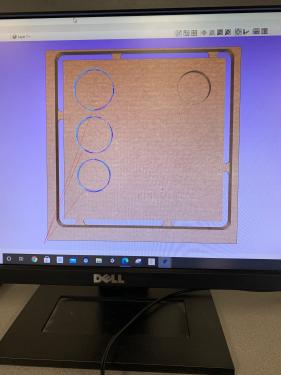
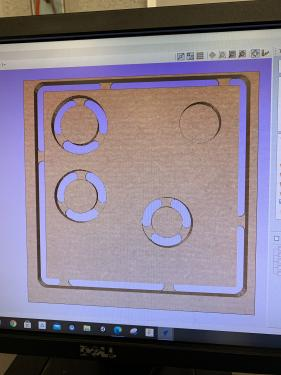
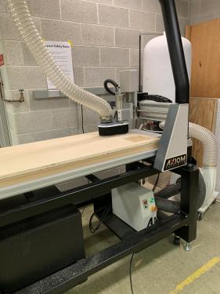
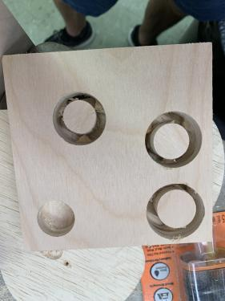
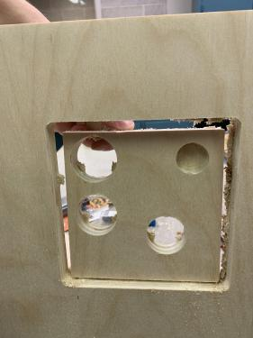

HOME
Week 5:Subtractive Manufacturing
Reverse 3D Printing.

CNC routers generally work by drilling and shaving wood to create a certain design. There are several different bits with several different purposes but they are all for the most part put in the machine the same way. There are the collet and the collet nut, bits are put into the collet while the collet is put within the collet nut the nut is then screwed into the CNC and is secured with wrenches tightening it. While the wood is being shaved down a lot of used material is moving around to prevent any issues caused by the build of a dust collection system is in the machine. You simply turn it on and sawdust will be sucked up into the tube. 


There's a handheld controller used to adjust the spacing of the CNC router. The X, Y, and Z move the portion holding the drill, additionally, there is a USB slot ontop of the controller allow the design to be implemented into the machine. 
Before starting a cut the work-bed must be focused on this blue tool. The reason being is this sets the origin, without it the machine might damage the bed by carving into an area without or containing too little material. 
The software being used for the CNC router is called Vcarve. To not harm the machine we went through training and in this training we made a design on this software. During my training we wanted to test how three different cut circles would fit within a 0.8 mm carve. I started by creating a simple rectangle with 4 circles. After I tested the 3D preview of the design but it only shows the outline of the rectangle as of the moment. 

The next thing I did was make tabs for the profile cut around my rectangle followed up by a cut for the circle carve and preview for my next three cuts. 
After creating tabs for the profile cuts we had found the circles were too close together and would interfere with each other if I were to carve them out like this so I had spaced them out to prevent any error. 
The only thing left to do was prepare the machine and cut it. There wasn't any issue aside from a small bit of carving the table as we tried accounting for the tape that keeps the wood in place. The cut otherwise was successful. Unluckily two of the three circles didn't fit which was a good teaching point for further use.   
Custom Design
When I was brainstorming what I could design I was thinking "Ok what could I make that would be 1. creative from other projects and 2. That I would enjoy" I started looking into things I enjoy for inspiration while doing this an idea sparked in my head. I thought what if I recreated something from a game but made it Wheaton themed? I got excited at the thought and started looking a few different games popped in my head but I decided to use Pokemon as inspiration as it was a huge part of my childhood. I had found the perfect object for this assignment: a Wheaton themed Pokeball. 
For this project, I knew I was going to need two programs to get me going 1. Adobe Illustrator to make a sketch skeleton 2. Fusion360 to make a colored 3D model.
The sketching phase was simple I just had to get a reference image and reverse engineer the shapes like so: 
Now going into fusion360 with reference in hand I started by sketching out the outer shell with the middle gap adding a line through the middle for the next step.

The line was used in order to allow the revolve tool to shape out the two halfs of a sphere. 
I used the shell tool to hollow out the center for later use. 
I repeated the same step as before minus the rectangle and shelling to add the inner circle. 

Next, I offset a plane behind the ball and pushed it to the front. This was done so I can sketch off the center button with an additional W to represent Wheaton. 


After sketching I extruded the sketches leading me to the final step: coloring.
 I did a very basic color scheme of white and blue to represent the Wheaton theme.
I did a very basic color scheme of white and blue to represent the Wheaton theme. 
To make this work in terms of Subtractive Manufacturing I split the two bodies to show how you'd have to break the design into sections. The machine has to simply hollow out two half spheres, carve out one sphere (or make two half-spheres), and then subtract out the rings/button followed by assembling everything after painting to create this finished product. The price of this would be around $20 if made out of wood. 


Overall I'm rather proud of this granted there could be improvements it's not perfect by any means but it did come out well and I'm happy about that.
Link to the files: here